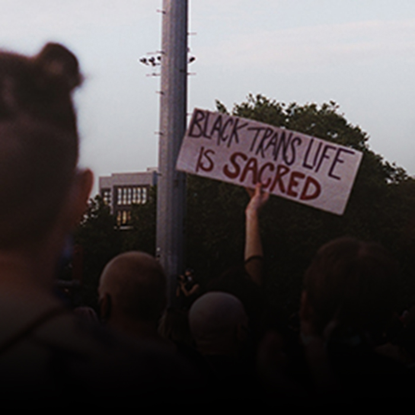

god forbid 2 of 'em
It’s so interesting to see how much of the trans elder groups are primarily just, white people. In fact, everyone except me and my girlfriend was white. It made me wonder; how much space white trans people take up in the general trans space to begin with. I had originally thought it was primarily an online space issue, but clearly that has a little bit of truth in real life.
I also wondered about how much representation white trans people (let’s face it white people in general) get in the media. It’s even more interesting to see how much coverage, positive or negative, that white trans people get in general. White trans people get their ‘first evers’ while trans people of color are left trying to figure out what they should relate to more; a cis person of color in media or a white trans person. The trick answer is that they don’t relate to either of them.
I have seen how us trans people of color are forced to confront our identities constantly, and yet we continue to get pushed out of white trans spaces due to our inability to increase our proximity to whiteness. I feel that intersectionality is something that people just can’t seem to comprehend, despite being a simple concept in truth. Majority of people have intersectional identities, whether they choose to see that or not. Intersectionality is understanding the privileges and disadvantages you have as a result of the crossing of identities. Perhaps that’s just a case of people who don’t end up confronting multiple identities of themselves at once, since enduring is a part of understanding.